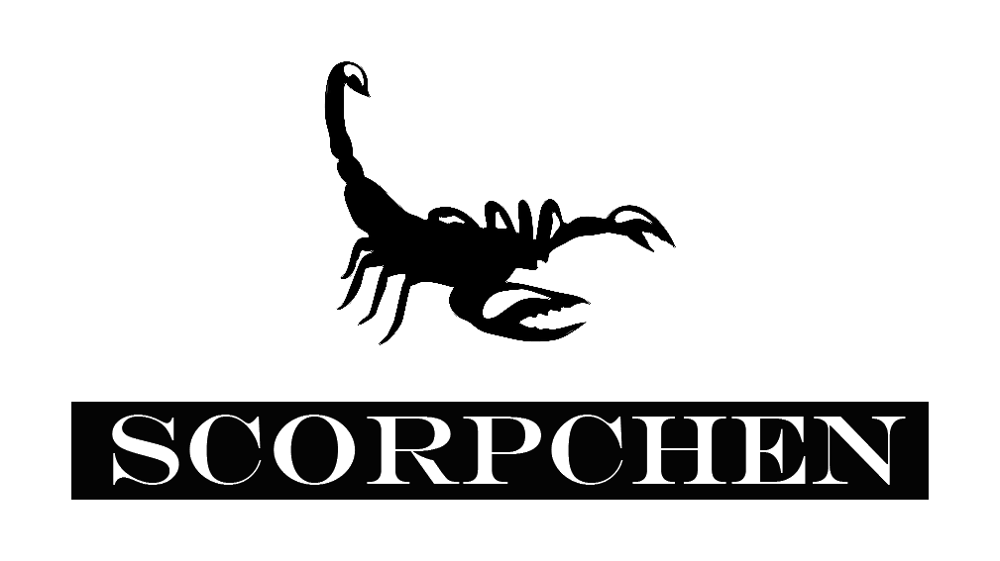

This is my first site for test. Enjoy yourself!
Orion Spacecraft for Artemis I Mission Arrives at NASA’s Plum Brook Station for Testing

The Artemis I Orion spacecraft arrived at NASA’s Plum Brook Station in Sandusky, Ohio, on Tuesday, Nov. 26 for in-space environmental testing in preparation for Artemis I.
This four-month test campaign will subject the spacecraft, consisting of its crew module and European-built service module, to the vacuum, extreme temperatures and electromagnetic environment it will experience during the three-week journey around the Moon and back. The goal of testing is to confirm the spacecraft’s components and systems work properly under in-space conditions, while gathering data to ensure the spacecraft is fit for all subsequent Artemis missions to the Moon and beyond.
“This is the final critical step before the spacecraft is ready to be joined with the Space Launch System rocket for this first test flight in 2020,” said Dr. Marla Pérez-Davis, acting director, NASA’s Glenn Research Center. “Our team at Plum Brook Station has been upgrading the Space Environments Complex to prepare for this test, and we are thrilled that it is here.”